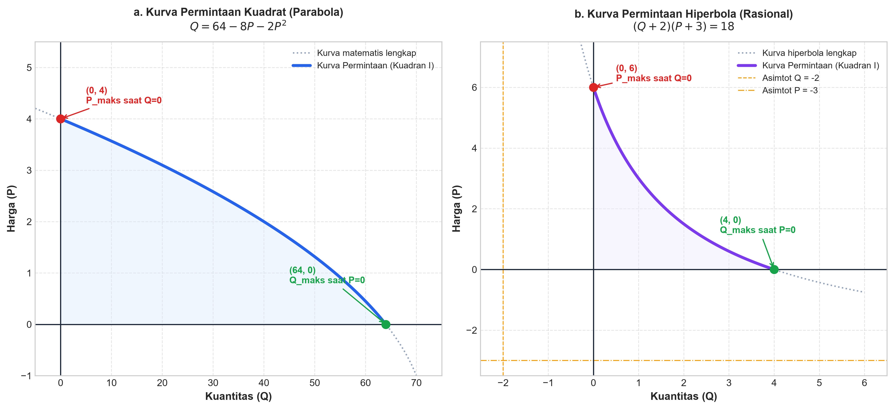

Penerapan Fungsi Non-Linear dalam Ekonomi
Pertemuan 05 · Kamis, 10 September 2026 · Ruang FKIP C.3.1
Dosen Pengampu: Vepi Apiati, S.Pd., M.Pd.
Kajian mendalam fungsi permintaan & penawaran non-linear (parabola), keseimbangan pasar non-linear, pengaruh kebijakan pajak & subsidi, dan kurva transformasi produksi (PPF).
I. Mengapa Menggunakan Fungsi Non-Linear?
Pada pertemuan sebelumnya (Pertemuan 02 & 03), kita memodelkan pasar menggunakan garis lurus (fungsi linear). Namun dalam kenyataan ekonomi sesungguhnya:
- Hukum Hasil yang Semakin Menurun (Law of Diminishing Marginal Utility): Tambahan kepuasan konsumen berkurang secara bertahap, sehingga kurva permintaan cenderung melengkung.
- Kapasitas Fisik dan Biaya Produksi: Produsen menghadapi batas kapasitas pabrik. Begitu kapasitas penuh, biaya melonjak tajam sehingga kurva penawaran melengkung ke atas.
- Elastisitas yang Tidak Konstan: Pada kurva non-linear, derajat kepekaan harga berubah di setiap tingkat kuantitas.
II. Fungsi Permintaan dan Penawaran Kuadrat
1. Fungsi Permintaan Kuadrat (Demand Curve)
Bentuk umum:
Karakteristik Ekonomi:
- Koefisien kuadrat pada kurva permintaan umumnya bernilai negatif (a < 0), sehingga parabola membuka ke bawah atau ke kiri.
- Kurva memiliki gradien negatif (kemiringan menurun dari kiri atas ke kanan bawah).
- Titik potong sumbu harga (P) menyatakan harga tertinggi saat kuantitas nol (reserve price).
2. Fungsi Penawaran Kuadrat (Supply Curve)
Bentuk umum:
Karakteristik Ekonomi:
- Koefisien kuadrat pada kurva penawaran bernilai positif (a > 0), parabola membuka ke atas atau ke kanan.
- Kurva bergerak naik dari kiri bawah ke kanan atas (makin tinggi harga, produsen terdorong menawarkan lebih banyak).
Persamaan kuadrat memiliki 2 cabang parabola. Dalam matematika ekonomi, hanya bagian kurva di Kuadran I yang memiliki makna nyata, yaitu:
III. Keseimbangan Pasar Non-Linear (Market Equilibrium)
Keseimbangan pasar tercapai apabila jumlah barang yang diminta sama dengan jumlah barang yang ditawarkan:
Fungsi permintaan suatu produk adalah Pd = 16 − Q² dan fungsi penawarannya adalah Ps = 4 + Q.
Tentukan harga dan kuantitas keseimbangan pasarnya!
Langkah Penyelesaian Sistematis:
-
Tulis Persamaan Keseimbangan:
Pd = Ps
16 − Q² = 4 + Q -
Susun ke Bentuk Persamaan Kuadrat Baku:
Pindahkan seluruh suku ke ruas kanan:
0 = Q² + Q + 4 − 16
Q² + Q − 12 = 0 -
Faktorkan Persamaan Kuadrat:
Cari dua bilangan jika dikalikan hasilnya −12 dan jika dijumlahkan hasilnya +1:
(Q + 4)(Q − 3) = 0
Maka: Q₁ = −4 atau Q₂ = 3 -
Evaluasi Kelayakan Ekonomi:
Karena kuantitas barang tidak boleh bernilai negatif (Q ≥ 0), maka Q = −4 gugur.
Kuantitas keseimbangan: Qe = 3 unit. -
Hitung Harga Keseimbangan (Pe):
Substitusikan Qe = 3 ke salah satu fungsi:
Pe = 4 + Qe = 4 + 3 = 7
Pengecekan ke fungsi permintaan: Pe = 16 − (3)² = 16 − 9 = 7 (Cocok!).
Kesimpulan: Titik keseimbangan pasar terjadi pada E(Qe, Pe) = (3, 7).
Fungsi permintaan: Qd = 19 − P²
Fungsi penawaran: Qs = 2P² − 8
Tentukan titik keseimbangan pasar!
Langkah Penyelesaian:
-
Syarat Keseimbangan:
Qd = Qs
19 − P² = 2P² − 8 -
Kumpulkan Suku Sejenis:
19 + 8 = 2P² + P²
27 = 3P²
P² = 9
P = ±√9 → P₁ = −3 atau P₂ = 3 -
Pilih Akar Positif:
Harga tidak mungkin negatif, maka Pe = 3. -
Hitung Kuantitas Keseimbangan (Qe):
Qe = 19 − (3)² = 19 − 9 = 10 unit.
Pengecekan di penawaran: Qe = 2(3)² − 8 = 18 − 8 = 10 (Cocok!).
Kesimpulan: Titik keseimbangan pasar adalah E(10, 3), artinya kuantitas 10 unit pada harga Rp 3.
IV. Pengaruh Pajak & Subsidi pada Keseimbangan Non-Linear
Prinsip pengaruh pajak dan subsidi tetap sama seperti kasus linear: pajak menaikkan kurva penawaran, sedangkan subsidi menurunkan kurva penawaran. Kurva permintaan tidak berubah.
| Bentuk Fungsi Penawaran | Setelah Pajak Spesifik (t) | Setelah Subsidi Spesifik (s) |
|---|---|---|
| P = f(Q) | Pst = f(Q) + t | Pss = f(Q) − s |
| Q = f(P) | Qst = f(P − t) | Qss = f(P + s) |
Dari Contoh Soal 1 di atas, diketahui Pd = 16 − Q² dan Ps = 4 + Q.
Jika pemerintah mengenakan pajak spesifik sebesar t = 6 per unit, tentukan:
a. Titik keseimbangan pasar setelah pajak Et(Qet, Pet)
b. Beban pajak yang ditanggung konsumen (tk) dan produsen (tp)
c. Total penerimaan pajak kas pemerintah (T)
Penyelesaian:
-
Tentukan Fungsi Penawaran Baru Setelah Pajak:
Pst = Ps + t
Pst = (4 + Q) + 6 = 10 + Q -
Keseimbangan Pasar Setelah Pajak:
Pd = Pst
16 − Q² = 10 + Q
Q² + Q + 10 − 16 = 0
Q² + Q − 6 = 0 -
Faktorkan Persamaan:
(Q + 3)(Q − 2) = 0
Q₁ = −3 (gugur), Qet = 2 unit. -
Hitung Harga Setelah Pajak (Pet):
Pet = 10 + 2 = 12 -
Beban Pajak Konsumen dan Produsen:
Keseimbangan awal sebelum pajak adalah Pe = 7.
- Beban konsumen: tk = Pet − Pe = 12 − 7 = 5 per unit.
- Beban produsen: tp = t − tk = 6 − 5 = 1 per unit. -
Total Penerimaan Pajak Pemerintah:
T = t × Qet = 6 × 2 = 12
- Total dari konsumen: Tk = 5 × 2 = 10
- Total dari produsen: Tp = 1 × 2 = 2
Pemeriksaan: 10 + 2 = 12 (Tepat!).
V. Kurva Transformasi Produksi (PPF)
Kurva Transformasi Produksi / Production Possibility Frontier (PPF) menggambarkan batas kemungkinan kombinasi dua komoditas (misal barang X dan barang Y) yang dapat diproduksi maksimal menggunakan seluruh sumber daya dan teknologi yang tersedia.
Bentuk Matematis PPF (Lingkaran / Elips):
Makna Posisi Titik:
- Pada Kurva: Produksi efisien, kapasitas sumber daya digunakan 100%.
- Di Dalam Kurva: Produksi tidak efisien / terdapat pengangguran sumber daya (idle resources).
- Di Luar Kurva: Mustahil diproduksi (unattainable) dengan teknologi dan modal saat ini.
Contoh Aplikasi PPF:
Sebuah perekonomian memproduksi komoditas X dan Y dengan kurva transformasi: X² + 4Y² = 100.
- Jika seluruh sumber daya digunakan memproduksi X saja (Y = 0):
X² + 4(0) = 100 → X = √100 = 10 unit komoditas X. - Jika seluruh sumber daya digunakan memproduksi Y saja (X = 0):
0 + 4Y² = 100 → Y² = 25 → Y = 5 unit komoditas Y. - Jika ditargetkan memproduksi 6 unit komoditas X, berapa maksimal komoditas Y yang dihasilkan?
(6)² + 4Y² = 100 → 36 + 4Y² = 100 → 4Y² = 64 → Y² = 16 → Y = 4 unit komoditas Y.
VI. Pembahasan Soal Catatan Kelas Hari Ini
"Buatlah (grafik) fungsi permintaan:"
a. Q = 64 − 8P − 2P²
b. (Q + 2)(P + 3) = 18
Langkah Analisis & Penggambaran Grafik:
-
Titik Potong Sumbu Q (saat harga P = 0):
Q = 64 − 8(0) − 2(0)² = 64.
Diperoleh titik (64, 0). Artinya jika barang gratis, permintaan maksimal 64 unit. -
Titik Potong Sumbu P (saat kuantitas Q = 0):
0 = 64 − 8P − 2P²
Bagi kedua ruas dengan −2:
P² + 4P − 32 = 0 → (P + 8)(P − 4) = 0
Akar: P₁ = −8 (tidak layak secara ekonomi), dan P₂ = 4 (layak).
Diperoleh titik (0, 4). Artinya pada harga P = 4, permintaan turun menjadi nol. -
Titik Puncak Parabola:
Untuk fungsi kuadrat Q = aP² + bP + c (a = −2, b = −8, c = 64):
Ppuncak = −b / (2a) = −(−8) / (2(−2)) = 8 / (−4) = −2.
Karena Ppuncak < 0, puncak berada di luar Kuadran I. -
Domain Ekonomi & Bentuk Grafik:
Pada Kuadran I, kurva permintaan berbentuk busur lengkung yang monoton turun dari titik (0, 4) di sumbu harga menuju titik (64, 0) di sumbu kuantitas.
Wilayah ekonomi: 0 ≤ P ≤ 4 dan 0 ≤ Q ≤ 64.
Langkah Analisis & Penggambaran Grafik:
-
Ubah ke Bentuk Eksplisit:
P = 18 / (Q + 2) − 3 dan Q = 18 / (P + 3) − 2. -
Titik Potong Sumbu Q (saat P = 0):
(Q + 2)(0 + 3) = 18 → 3(Q + 2) = 18 → Q + 2 = 6 → Q = 4.
Diperoleh titik (4, 0). Permintaan maksimal saat barang gratis adalah 4 unit. -
Titik Potong Sumbu P (saat Q = 0):
(0 + 2)(P + 3) = 18 → 2(P + 3) = 18 → P + 3 = 9 → P = 6.
Diperoleh titik (0, 6). Pada harga P = 6, permintaan konsumen terhenti (Q = 0). -
Asimtot & Karakter Kurva:
Asimtot tegak pada Q = −2 dan asimtot mendatar pada P = −3.
Di Kuadran I, kurva merupakan kurva hiperbola mulus yang cembung (konveks) terhadap titik asal, melengkung turun dari (0, 6) menuju (4, 0).
Wilayah ekonomi: 0 ≤ Q ≤ 4 dan 0 ≤ P ≤ 6.
Visualisasi Grafik Bidang Kartesius Kedua Fungsi:

Grafik menunjukkan kurva tebal di Kuadran I yang memenuhi syarat batas ekonomi (P ≥ 0 dan Q ≥ 0).
VII. Latihan Mandiri untuk Mahasiswa
-
Keseimbangan Pasar Kuadrat:
Fungsi permintaan diberikan oleh Pd = 25 − Q² dan fungsi penawaran Ps = 2Q + 1. Tentukan kuantitas dan harga keseimbangan pasar (Qe, Pe)! -
Dampak Pajak:
Berdasarkan soal nomor 1, jika pemerintah mengenakan pajak spesifik sebesar t = 4 per unit, carilah titik keseimbangan pasar setelah pajak dan hitung total penerimaan kas negara! -
Keseimbangan Parabola Murni:
Fungsi permintaan Qd = 64 − P² dan penawaran Qs = P² − 8. Tentukan nilai Pe dan Qe! -
Analisis PPF:
Diberikan kurva kemungkinan produksi 2X² + Y² = 72. Berapa jumlah unit Y yang dapat dihasilkan jika produsen memutuskan membuat 4 unit komoditas X?
Kunci Jawaban Singkat untuk Pengecekan:
- Nomor 1: Q² + 2Q − 24 = 0 → (Q + 6)(Q − 4) = 0 → Qe = 4 unit, Pe = 9.
- Nomor 2: Pst = 2Q + 5 → Q² + 2Q − 20 = 0 → Qet ≈ 3,58 unit, Pet ≈ 12,16. Total Pajak T ≈ 4 × 3,58 = 14,32.
- Nomor 3: 2P² = 72 → P² = 36 → Pe = 6, Qe = 28 unit.
- Nomor 4: 2(4)² + Y² = 72 → 32 + Y² = 72 → Y² = 40 → Y = √40 ≈ 6,32 unit.